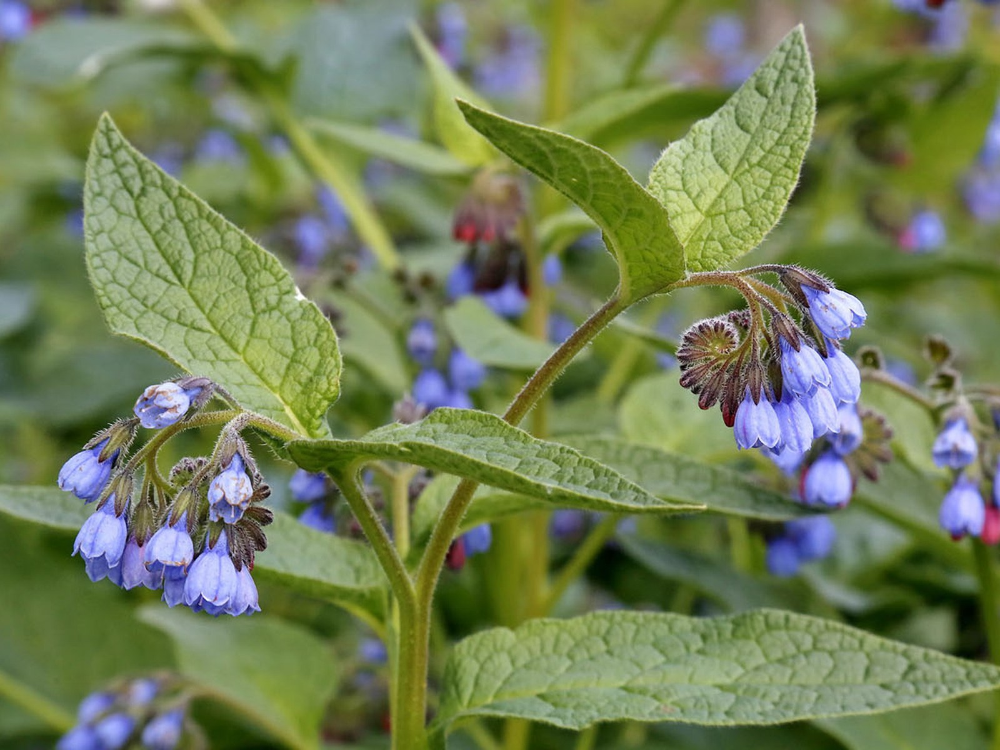

Влажные луга, берега водоёмов, болота, кустарники. Встречается почти по всей Европейской части России и на юге Западной Сибири. Высокий, шершавый, с поникающими пурпурными или голубыми цветками.
Окопник — лучший друг туриста с вывихом, растяжением или ожогом. В народе его называют «живокост». Корень заживляет раны, сращивает переломы, снимает воспаление суставов. Отвар пьют при кашле и расстройстве желудка. Из него же делают примочки и компрессы. Также окопник используют в клинической стоматологии при пародонтозе.
Корень окопника — 1 столовая ложка. Кипяток — 300 мл. Способ применения: Залить корень кипятком, настоять 1 час. Пить по 2–3 столовые ложки 3 раза в день. Для компрессов — смочить ткань в тёплом настое и приложить к больному месту. Держать до остывания.